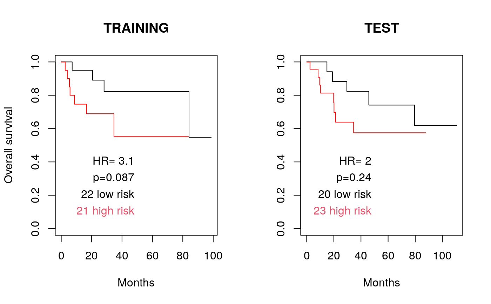

<!-- Generated by pkgdown: do not edit by hand -->
<!DOCTYPE html>
<html lang="en">
  <head>
  <meta charset="utf-8">
<meta http-equiv="X-UA-Compatible" content="IE=edge">
<meta name="viewport" content="width=device-width, initial-scale=1.0">

<title>Parallelized repeated tuning of Lasso or Ridge penalty parameter — opt1D • pensim</title>


<!-- jquery -->
<script src="https://cdnjs.cloudflare.com/ajax/libs/jquery/3.4.1/jquery.min.js" integrity="sha256-CSXorXvZcTkaix6Yvo6HppcZGetbYMGWSFlBw8HfCJo=" crossorigin="anonymous"></script>
<!-- Bootstrap -->

<link rel="stylesheet" href="https://cdnjs.cloudflare.com/ajax/libs/twitter-bootstrap/3.4.1/css/bootstrap.min.css" integrity="sha256-bZLfwXAP04zRMK2BjiO8iu9pf4FbLqX6zitd+tIvLhE=" crossorigin="anonymous" />

<script src="https://cdnjs.cloudflare.com/ajax/libs/twitter-bootstrap/3.4.1/js/bootstrap.min.js" integrity="sha256-nuL8/2cJ5NDSSwnKD8VqreErSWHtnEP9E7AySL+1ev4=" crossorigin="anonymous"></script>

<!-- bootstrap-toc -->
<link rel="stylesheet" href="../bootstrap-toc.css">
<script src="../bootstrap-toc.js"></script>

<!-- Font Awesome icons -->
<link rel="stylesheet" href="https://cdnjs.cloudflare.com/ajax/libs/font-awesome/5.12.1/css/all.min.css" integrity="sha256-mmgLkCYLUQbXn0B1SRqzHar6dCnv9oZFPEC1g1cwlkk=" crossorigin="anonymous" />
<link rel="stylesheet" href="https://cdnjs.cloudflare.com/ajax/libs/font-awesome/5.12.1/css/v4-shims.min.css" integrity="sha256-wZjR52fzng1pJHwx4aV2AO3yyTOXrcDW7jBpJtTwVxw=" crossorigin="anonymous" />

<!-- clipboard.js -->
<script src="https://cdnjs.cloudflare.com/ajax/libs/clipboard.js/2.0.6/clipboard.min.js" integrity="sha256-inc5kl9MA1hkeYUt+EC3BhlIgyp/2jDIyBLS6k3UxPI=" crossorigin="anonymous"></script>

<!-- headroom.js -->
<script src="https://cdnjs.cloudflare.com/ajax/libs/headroom/0.11.0/headroom.min.js" integrity="sha256-AsUX4SJE1+yuDu5+mAVzJbuYNPHj/WroHuZ8Ir/CkE0=" crossorigin="anonymous"></script>
<script src="https://cdnjs.cloudflare.com/ajax/libs/headroom/0.11.0/jQuery.headroom.min.js" integrity="sha256-ZX/yNShbjqsohH1k95liqY9Gd8uOiE1S4vZc+9KQ1K4=" crossorigin="anonymous"></script>

<!-- pkgdown -->
<link href="../pkgdown.css" rel="stylesheet">
<script src="../pkgdown.js"></script>


<meta property="og:title" content="Parallelized repeated tuning of Lasso or Ridge penalty parameter — opt1D" />
<meta property="og:description" content="This function is a wrapper to the optL1 and optL2 functions of the
penalized R package, useful for parallelized repeated tuning of the
penalty parameters." />


<!-- mathjax -->
<script src="https://cdnjs.cloudflare.com/ajax/libs/mathjax/2.7.5/MathJax.js" integrity="sha256-nvJJv9wWKEm88qvoQl9ekL2J+k/RWIsaSScxxlsrv8k=" crossorigin="anonymous"></script>
<script src="https://cdnjs.cloudflare.com/ajax/libs/mathjax/2.7.5/config/TeX-AMS-MML_HTMLorMML.js" integrity="sha256-84DKXVJXs0/F8OTMzX4UR909+jtl4G7SPypPavF+GfA=" crossorigin="anonymous"></script>

<!--[if lt IE 9]>
<script src="https://oss.maxcdn.com/html5shiv/3.7.3/html5shiv.min.js"></script>
<script src="https://oss.maxcdn.com/respond/1.4.2/respond.min.js"></script>
<![endif]-->


  </head>

  <body data-spy="scroll" data-target="#toc">
    <div class="container template-reference-topic">
      <header>
      <div class="navbar navbar-default navbar-fixed-top" role="navigation">
  <div class="container">
    <div class="navbar-header">
      <button type="button" class="navbar-toggle collapsed" data-toggle="collapse" data-target="#navbar" aria-expanded="false">
        <span class="sr-only">Toggle navigation</span>
        <span class="icon-bar"></span>
        <span class="icon-bar"></span>
        <span class="icon-bar"></span>
      </button>
      <span class="navbar-brand">
        <a class="navbar-link" href="../index.html">pensim</a>
        <span class="version label label-default" data-toggle="tooltip" data-placement="bottom" title="Released version">1.3.1</span>
      </span>
    </div>

    <div id="navbar" class="navbar-collapse collapse">
      <ul class="nav navbar-nav">
        <li>
  <a href="../index.html">
    <span class="fas fa fas fa-home fa-lg"></span>
     
  </a>
</li>
<li>
  <a href="../articles/pensim.html">Get started</a>
</li>
<li>
  <a href="../reference/index.html">Reference</a>
</li>
      </ul>
      <ul class="nav navbar-nav navbar-right">
        <li>
  <a href="https://github.com/waldronlab/pensim/">
    <span class="fab fa fab fa-github fa-lg"></span>
     
  </a>
</li>
      </ul>
      
    </div><!--/.nav-collapse -->
  </div><!--/.container -->
</div><!--/.navbar -->

      

      </header>

<div class="row">
  <div class="col-md-9 contents">
    <div class="page-header">
    <h1>Parallelized repeated tuning of Lasso or Ridge penalty parameter</h1>
    
    <div class="hidden name"><code>opt1D.Rd</code></div>
    </div>

    <div class="ref-description">
    <p>This function is a wrapper to the optL1 and optL2 functions of the
penalized R package, useful for parallelized repeated tuning of the
penalty parameters.</p>
    </div>

    <pre class="usage"><span class='fu'>opt1D</span>(<span class='kw'>nsim</span> <span class='kw'>=</span> <span class='fl'>50</span>, <span class='kw'>nprocessors</span> <span class='kw'>=</span> <span class='fl'>1</span>, <span class='kw'>setpen</span> <span class='kw'>=</span> <span class='st'>"L1"</span>, <span class='kw'>cl</span> <span class='kw'>=</span> <span class='kw'>NULL</span>, <span class='no'>...</span>)</pre>

    <h2 class="hasAnchor" id="arguments"><a class="anchor" href="#arguments"></a>Arguments</h2>
    <table class="ref-arguments">
    <colgroup><col class="name" /><col class="desc" /></colgroup>
    <tr>
      <th>nsim</th>
      <td><p>Number of times to repeat the simulation (around 50 is suggested)</p></td>
    </tr>
    <tr>
      <th>nprocessors</th>
      <td><p>An integer number of processors to use.</p></td>
    </tr>
    <tr>
      <th>setpen</th>
      <td><p>Either "L1" (Lasso) or "L2" (Ridge) penalty</p></td>
    </tr>
    <tr>
      <th>cl</th>
      <td><p>Optional cluster object created with the makeCluster() function of
    the parallel package.  If this is not set, pensim calls
    makeCluster(nprocessors, type="SOCK").   Setting this parameter
    can enable parallelization in more diverse scenarios than multi-core
    desktops; see the documentation for the parallel package.  Note that if
    cl is user-defined, this function will not automatically run
    parallel::stopCluster() to shut down the cluster.</p></td>
    </tr>
    <tr>
      <th>...</th>
      <td><p>arguments passed on to optL1 or optL2 function of the penalized R package</p></td>
    </tr>
    </table>

    <h2 class="hasAnchor" id="details"><a class="anchor" href="#details"></a>Details</h2>

    <p>This function sets up a SNOW (Simple Network of Workstations) "sock"
  cluster to parallelize the task of repeated tunings the L1 or L2 penalty
  parameter.  Tuning of the penalty parameters is done by the optL1 or
  optL2 functions of the penalized R package.</p>
    <h2 class="hasAnchor" id="value"><a class="anchor" href="#value"></a>Value</h2>

    <p>Returns a matrix with the following columns:</p>
<dt>L1 (or L2)</dt><dd><p>optimized value of the penalty parameter</p></dd>
  <dt>cvl</dt><dd><p>optimized cross-validated likelihood</p></dd>
  <dt>coef_1, coef_2, ..., coef_n</dt><dd><p>argmax coefficients for the model
    with this value of the tuning parameter</p></dd>

  The matrix contains one row for each repeat of the regression.

    <h2 class="hasAnchor" id="references"><a class="anchor" href="#references"></a>References</h2>

    <p>Waldron L, Pintilie M, Tsao M-S, Shepherd FA, Huttenhower C*, Jurisica
  I*: Optimized application of penalized regression methods to diverse
  genomic data. Bioinformatics 2011, 27:3399-3406.  (*equal contribution)</p>
    <h2 class="hasAnchor" id="note"><a class="anchor" href="#note"></a>Note</h2>

    <p>Depends on the R packages: penalized, parallel, rlecuyer</p>
    <h2 class="hasAnchor" id="see-also"><a class="anchor" href="#see-also"></a>See also</h2>

    <div class='dont-index'><p>optL1, optL2</p></div>

    <h2 class="hasAnchor" id="examples"><a class="anchor" href="#examples"></a>Examples</h2>
    <pre class="examples"><div class='input'><span class='fu'><a href='https://rdrr.io/r/utils/data.html'>data</a></span>(<span class='no'>beer.exprs</span>)
<span class='fu'><a href='https://rdrr.io/r/utils/data.html'>data</a></span>(<span class='no'>beer.survival</span>)

<span class='co'>##select just 100 genes to speed computation:</span>
<span class='fu'><a href='https://rdrr.io/r/base/Random.html'>set.seed</a></span>(<span class='fl'>1</span>)
<span class='no'>beer.exprs.sample</span> <span class='kw'>&lt;-</span> <span class='no'>beer.exprs</span>[<span class='fu'><a href='https://rdrr.io/r/base/sample.html'>sample</a></span>(<span class='fl'>1</span>:<span class='fu'><a href='https://rdrr.io/r/base/nrow.html'>nrow</a></span>(<span class='no'>beer.exprs</span>), <span class='fl'>100</span>),]

<span class='no'>gene.quant</span> <span class='kw'>&lt;-</span> <span class='fu'><a href='https://rdrr.io/r/base/apply.html'>apply</a></span>(<span class='no'>beer.exprs.sample</span>, <span class='fl'>1</span>, <span class='no'>quantile</span>, <span class='kw'>probs</span> <span class='kw'>=</span> <span class='fl'>0.75</span>)
<span class='no'>dat.filt</span> <span class='kw'>&lt;-</span> <span class='no'>beer.exprs.sample</span>[<span class='no'>gene.quant</span> <span class='kw'>&gt;</span> <span class='fu'><a href='https://rdrr.io/r/base/Log.html'>log2</a></span>(<span class='fl'>100</span>),]
<span class='no'>gene.iqr</span> <span class='kw'>&lt;-</span> <span class='fu'><a href='https://rdrr.io/r/base/apply.html'>apply</a></span>(<span class='no'>dat.filt</span>, <span class='fl'>1</span>, <span class='no'>IQR</span>)
<span class='no'>dat.filt</span> <span class='kw'>&lt;-</span> <span class='fu'><a href='https://rdrr.io/r/base/matrix.html'>as.matrix</a></span>(<span class='no'>dat.filt</span>[<span class='no'>gene.iqr</span> <span class='kw'>&gt;</span> <span class='fl'>0.5</span>,])
<span class='no'>dat.filt</span> <span class='kw'>&lt;-</span> <span class='fu'><a href='https://rdrr.io/r/base/t.html'>t</a></span>(<span class='no'>dat.filt</span>)

<span class='co'>##define training and test sets</span>
<span class='fu'><a href='https://rdrr.io/r/base/Random.html'>set.seed</a></span>(<span class='fl'>1</span>)
<span class='no'>trainingset</span> <span class='kw'>&lt;-</span> <span class='fu'><a href='https://rdrr.io/r/base/sample.html'>sample</a></span>(<span class='fu'><a href='https://rdrr.io/r/base/colnames.html'>rownames</a></span>(<span class='no'>dat.filt</span>), <span class='fu'><a href='https://rdrr.io/r/base/Round.html'>round</a></span>(<span class='fu'><a href='https://rdrr.io/r/base/nrow.html'>nrow</a></span>(<span class='no'>dat.filt</span>) / <span class='fl'>2</span>))
<span class='no'>testset</span> <span class='kw'>&lt;-</span>
  <span class='fu'><a href='https://rdrr.io/r/base/colnames.html'>rownames</a></span>(<span class='no'>dat.filt</span>)[!<span class='fu'><a href='https://rdrr.io/r/base/colnames.html'>rownames</a></span>(<span class='no'>dat.filt</span>) <span class='kw'>%in%</span> <span class='no'>trainingset</span>]

<span class='no'>dat.training</span> <span class='kw'>&lt;-</span> <span class='fu'><a href='https://rdrr.io/r/base/data.frame.html'>data.frame</a></span>(<span class='no'>dat.filt</span>[<span class='no'>trainingset</span>, ])
<span class='no'>pheno.training</span> <span class='kw'>&lt;-</span> <span class='no'>beer.survival</span>[<span class='no'>trainingset</span>, ]

<span class='fu'><a href='https://rdrr.io/r/base/library.html'>library</a></span>(<span class='no'>survival</span>)
<span class='no'>surv.training</span> <span class='kw'>&lt;-</span> <span class='fu'><a href='https://rdrr.io/pkg/survival/man/Surv.html'>Surv</a></span>(<span class='no'>pheno.training</span>$<span class='no'>os</span>, <span class='no'>pheno.training</span>$<span class='no'>status</span>)

<span class='no'>dat.test</span> <span class='kw'>&lt;-</span> <span class='fu'><a href='https://rdrr.io/r/base/data.frame.html'>data.frame</a></span>(<span class='no'>dat.filt</span>[<span class='no'>testset</span>, ])
<span class='fu'><a href='https://rdrr.io/r/base/all.equal.html'>all.equal</a></span>(<span class='fu'><a href='https://rdrr.io/r/base/colnames.html'>colnames</a></span>(<span class='no'>dat.training</span>), <span class='fu'><a href='https://rdrr.io/r/base/colnames.html'>colnames</a></span>(<span class='no'>dat.test</span>))</div><div class='output co'>#&gt; [1] TRUE</div><div class='input'><span class='no'>pheno.test</span> <span class='kw'>&lt;-</span> <span class='no'>beer.survival</span>[<span class='no'>testset</span>, ]
<span class='no'>surv.test</span> <span class='kw'>&lt;-</span> <span class='fu'><a href='https://rdrr.io/pkg/survival/man/Surv.html'>Surv</a></span>(<span class='no'>pheno.test</span>$<span class='no'>os</span>, <span class='no'>pheno.test</span>$<span class='no'>status</span>)

<span class='co'>##ideally nsim should be on the order of 50,  but this slows computation</span>
<span class='co'>##50x without parallelization.</span>
<span class='fu'><a href='https://rdrr.io/r/base/Random.html'>set.seed</a></span>(<span class='fl'>1</span>)
<span class='no'>output</span> <span class='kw'>&lt;-</span>
  <span class='kw pkg'>pensim</span><span class='kw ns'>::</span><span class='fu'>opt1D</span>(
    <span class='kw'>nsim</span> <span class='kw'>=</span> <span class='fl'>1</span>,
    <span class='kw'>nprocessors</span> <span class='kw'>=</span> <span class='fl'>1</span>,
    <span class='kw'>setpen</span> <span class='kw'>=</span> <span class='st'>"L2"</span>,
    <span class='kw'>response</span> <span class='kw'>=</span> <span class='no'>surv.training</span>,
    <span class='kw'>penalized</span> <span class='kw'>=</span> <span class='no'>dat.training</span>,
    <span class='kw'>fold</span> <span class='kw'>=</span> <span class='fl'>3</span>,
    <span class='kw'>positive</span> <span class='kw'>=</span> <span class='fl'>FALSE</span>,
    <span class='kw'>standardize</span> <span class='kw'>=</span> <span class='fl'>TRUE</span>,
    <span class='kw'>minlambda2</span> <span class='kw'>=</span> <span class='fl'>1</span>,
    <span class='kw'>maxlambda2</span> <span class='kw'>=</span> <span class='fl'>100</span>
  )</div><div class='output co'>#&gt; lambda= 100 	123cvl= -43.98462 
#&gt; lambda= 38.81464 	123cvl= -44.60101 
#&gt; lambda= 62.18536 	123cvl= -44.23014 
#&gt; lambda= 76.62927 	123cvl= -44.10918 
#&gt; lambda= 90.53496 	123cvl= -44.02766 
#&gt; lambda= 85.22346 	123cvl= -44.0558 
#&gt; lambda= 94.15029 	123cvl= -44.01025 
#&gt; lambda= 96.38468 	123cvl= -44.00011 
#&gt; lambda= 97.76561 	123cvl= -43.99406 
#&gt; lambda= 98.61907 	123cvl= -43.99041 
#&gt; lambda= 99.14654 	123cvl= -43.98818 
#&gt; lambda= 99.47253 	123cvl= -43.98681 
#&gt; lambda= 99.67401 	123cvl= -43.98597 
#&gt; lambda= 99.79853 	123cvl= -43.98546 
#&gt; lambda= 99.87548 	123cvl= -43.98514 
#&gt; lambda= 99.92304 	123cvl= -43.98494 
#&gt; lambda= 99.95244 	123cvl= -43.98482 
#&gt; lambda= 99.97061 	123cvl= -43.98474 
#&gt; lambda= 99.98183 	123cvl= -43.9847 </div><div class='input'>
<span class='no'>cc</span> <span class='kw'>&lt;-</span> <span class='no'>output</span>[<span class='fu'><a href='https://rdrr.io/r/base/which.min.html'>which.max</a></span>(<span class='no'>output</span>[, <span class='st'>"cvl"</span>]),-(<span class='fl'>1</span>:<span class='fl'>2</span>)]  <span class='co'>#coefficients</span>
<span class='fu'><a href='https://rdrr.io/r/base/sum.html'>sum</a></span>(<span class='fu'><a href='https://rdrr.io/r/base/MathFun.html'>abs</a></span>(<span class='no'>cc</span>) <span class='kw'>&gt;</span> <span class='fl'>0</span>)  <span class='co'>#count non-zero coefficients</span></div><div class='output co'>#&gt; [1] 14</div><div class='input'>
<span class='no'>preds.training</span> <span class='kw'>&lt;-</span> <span class='fu'><a href='https://rdrr.io/r/base/matrix.html'>as.matrix</a></span>(<span class='no'>dat.training</span>) <span class='kw'>%*%</span> <span class='no'>cc</span>
<span class='no'>preds.training.median</span> <span class='kw'>&lt;-</span> <span class='fu'><a href='https://rdrr.io/r/stats/median.html'>median</a></span>(<span class='no'>preds.training</span>)
<span class='no'>preds.training.dichot</span> <span class='kw'>&lt;-</span>
  <span class='fu'><a href='https://rdrr.io/r/base/ifelse.html'>ifelse</a></span>(<span class='no'>preds.training</span> <span class='kw'>&gt;</span> <span class='no'>preds.training.median</span>, <span class='st'>"high risk"</span>, <span class='st'>"low risk"</span>)
<span class='no'>preds.training.dichot</span> <span class='kw'>&lt;-</span>
  <span class='fu'><a href='https://rdrr.io/r/base/factor.html'>factor</a></span>(<span class='no'>preds.training.dichot</span>[, <span class='fl'>1</span>], <span class='kw'>levels</span> <span class='kw'>=</span> <span class='fu'><a href='https://rdrr.io/r/base/c.html'>c</a></span>(<span class='st'>"low risk"</span>, <span class='st'>"high risk"</span>))
<span class='no'>preds.test</span> <span class='kw'>&lt;-</span> <span class='fu'><a href='https://rdrr.io/r/base/matrix.html'>as.matrix</a></span>(<span class='no'>dat.test</span>) <span class='kw'>%*%</span> <span class='no'>cc</span>
<span class='no'>preds.test.dichot</span> <span class='kw'>&lt;-</span>
  <span class='fu'><a href='https://rdrr.io/r/base/ifelse.html'>ifelse</a></span>(<span class='no'>preds.test</span> <span class='kw'>&gt;</span> <span class='no'>preds.training.median</span>, <span class='st'>"high risk"</span>, <span class='st'>"low risk"</span>)
<span class='no'>preds.test.dichot</span> <span class='kw'>&lt;-</span>
  <span class='fu'><a href='https://rdrr.io/r/base/factor.html'>factor</a></span>(<span class='no'>preds.test.dichot</span>[, <span class='fl'>1</span>], <span class='kw'>levels</span> <span class='kw'>=</span> <span class='fu'><a href='https://rdrr.io/r/base/c.html'>c</a></span>(<span class='st'>"low risk"</span>, <span class='st'>"high risk"</span>))

<span class='no'>coxphfit.training</span> <span class='kw'>&lt;-</span> <span class='fu'><a href='https://rdrr.io/pkg/survival/man/coxph.html'>coxph</a></span>(<span class='no'>surv.training</span> ~ <span class='no'>preds.training.dichot</span>)
<span class='no'>survfit.training</span> <span class='kw'>&lt;-</span> <span class='fu'><a href='https://rdrr.io/pkg/survival/man/survfit.html'>survfit</a></span>(<span class='no'>surv.training</span> ~ <span class='no'>preds.training.dichot</span>)
<span class='fu'><a href='https://rdrr.io/r/base/summary.html'>summary</a></span>(<span class='no'>coxphfit.training</span>)</div><div class='output co'>#&gt; Call:
#&gt; coxph(formula = surv.training ~ preds.training.dichot)
#&gt; 
#&gt;   n= 43, number of events= 11 
#&gt; 
#&gt;                                  coef exp(coef) se(coef)     z Pr(&gt;|z|)
#&gt; preds.training.dichothigh risk 1.1280    3.0895   0.6931 1.628    0.104
#&gt; 
#&gt;                                exp(coef) exp(-coef) lower .95 upper .95
#&gt; preds.training.dichothigh risk     3.089     0.3237    0.7942     12.02
#&gt; 
#&gt; Concordance= 0.65  (se = 0.068 )
#&gt; Likelihood ratio test= 2.94  on 1 df,   p=0.09
#&gt; Wald test            = 2.65  on 1 df,   p=0.1
#&gt; Score (logrank) test = 2.93  on 1 df,   p=0.09
#&gt; </div><div class='input'><span class='no'>coxphfit.test</span> <span class='kw'>&lt;-</span> <span class='fu'><a href='https://rdrr.io/pkg/survival/man/coxph.html'>coxph</a></span>(<span class='no'>surv.test</span> ~ <span class='no'>preds.test.dichot</span>)
<span class='no'>survfit.test</span> <span class='kw'>&lt;-</span> <span class='fu'><a href='https://rdrr.io/pkg/survival/man/survfit.html'>survfit</a></span>(<span class='no'>surv.test</span> ~ <span class='no'>preds.test.dichot</span>)
<span class='fu'><a href='https://rdrr.io/r/base/summary.html'>summary</a></span>(<span class='no'>coxphfit.test</span>)</div><div class='output co'>#&gt; Call:
#&gt; coxph(formula = surv.test ~ preds.test.dichot)
#&gt; 
#&gt;   n= 43, number of events= 13 
#&gt; 
#&gt;                              coef exp(coef) se(coef)     z Pr(&gt;|z|)
#&gt; preds.test.dichothigh risk 0.6720    1.9582   0.5765 1.166    0.244
#&gt; 
#&gt;                            exp(coef) exp(-coef) lower .95 upper .95
#&gt; preds.test.dichothigh risk     1.958     0.5107    0.6326     6.061
#&gt; 
#&gt; Concordance= 0.618  (se = 0.063 )
#&gt; Likelihood ratio test= 1.41  on 1 df,   p=0.2
#&gt; Wald test            = 1.36  on 1 df,   p=0.2
#&gt; Score (logrank) test = 1.41  on 1 df,   p=0.2
#&gt; </div><div class='input'>
(<span class='no'>p.training</span> <span class='kw'>&lt;-</span>
    <span class='fu'><a href='https://rdrr.io/r/base/Round.html'>signif</a></span>(<span class='fu'><a href='https://rdrr.io/r/base/summary.html'>summary</a></span>(<span class='no'>coxphfit.training</span>)$<span class='no'>logtest</span>[<span class='fl'>3</span>], <span class='fl'>2</span>))  <span class='co'>#likelihood ratio test</span></div><div class='output co'>#&gt; pvalue 
#&gt;  0.087 </div><div class='input'>(<span class='no'>hr.training</span> <span class='kw'>&lt;-</span> <span class='fu'><a href='https://rdrr.io/r/base/Round.html'>signif</a></span>(<span class='fu'><a href='https://rdrr.io/r/base/summary.html'>summary</a></span>(<span class='no'>coxphfit.training</span>)$<span class='no'>conf.int</span>[<span class='fl'>1</span>], <span class='fl'>2</span>))</div><div class='output co'>#&gt; [1] 3.1</div><div class='input'>(<span class='no'>hr.lower.training</span> <span class='kw'>&lt;-</span> <span class='fu'><a href='https://rdrr.io/r/base/summary.html'>summary</a></span>(<span class='no'>coxphfit.training</span>)$<span class='no'>conf.int</span>[<span class='fl'>3</span>])</div><div class='output co'>#&gt; [1] 0.7942331</div><div class='input'>(<span class='no'>hr.upper.training</span> <span class='kw'>&lt;-</span> <span class='fu'><a href='https://rdrr.io/r/base/summary.html'>summary</a></span>(<span class='no'>coxphfit.training</span>)$<span class='no'>conf.int</span>[<span class='fl'>4</span>])</div><div class='output co'>#&gt; [1] 12.01763</div><div class='input'><span class='fu'><a href='https://rdrr.io/r/graphics/par.html'>par</a></span>(<span class='kw'>mfrow</span> <span class='kw'>=</span> <span class='fu'><a href='https://rdrr.io/r/base/c.html'>c</a></span>(<span class='fl'>1</span>, <span class='fl'>2</span>))
<span class='fu'><a href='https://rdrr.io/r/graphics/plot.html'>plot</a></span>(
  <span class='no'>survfit.training</span>,
  <span class='kw'>col</span> <span class='kw'>=</span> <span class='fu'><a href='https://rdrr.io/r/base/c.html'>c</a></span>(<span class='st'>"black"</span>, <span class='st'>"red"</span>),
  <span class='kw'>conf.int</span> <span class='kw'>=</span> <span class='fl'>FALSE</span>,
  <span class='kw'>xlab</span> <span class='kw'>=</span> <span class='st'>"Months"</span>,
  <span class='kw'>main</span> <span class='kw'>=</span> <span class='st'>"TRAINING"</span>,
  <span class='kw'>ylab</span> <span class='kw'>=</span> <span class='st'>"Overall survival"</span>
)
<span class='no'>xmax</span> <span class='kw'>&lt;-</span> <span class='fu'><a href='https://rdrr.io/r/graphics/par.html'>par</a></span>(<span class='st'>"usr"</span>)[<span class='fl'>2</span>] - <span class='fl'>50</span>
<span class='fu'><a href='https://rdrr.io/r/graphics/text.html'>text</a></span>(
  <span class='kw'>x</span> <span class='kw'>=</span> <span class='no'>xmax</span>,
  <span class='kw'>y</span> <span class='kw'>=</span> <span class='fl'>0.4</span>,
  <span class='kw'>lab</span> <span class='kw'>=</span> <span class='fu'><a href='https://rdrr.io/r/base/paste.html'>paste</a></span>(<span class='st'>"HR="</span>, <span class='no'>hr.training</span>),
  <span class='kw'>pos</span> <span class='kw'>=</span> <span class='fl'>2</span>
)
<span class='fu'><a href='https://rdrr.io/r/graphics/text.html'>text</a></span>(
  <span class='kw'>x</span> <span class='kw'>=</span> <span class='no'>xmax</span>,
  <span class='kw'>y</span> <span class='kw'>=</span> <span class='fl'>0.3</span>,
  <span class='kw'>lab</span> <span class='kw'>=</span> <span class='fu'><a href='https://rdrr.io/r/base/paste.html'>paste</a></span>(<span class='st'>"p="</span>, <span class='no'>p.training</span>, <span class='st'>""</span>, <span class='kw'>sep</span> <span class='kw'>=</span> <span class='st'>""</span>),
  <span class='kw'>pos</span> <span class='kw'>=</span> <span class='fl'>2</span>
)
<span class='no'>tmp</span> <span class='kw'>&lt;-</span> <span class='fu'><a href='https://rdrr.io/r/base/summary.html'>summary</a></span>(<span class='no'>preds.training.dichot</span>)
<span class='fu'><a href='https://rdrr.io/r/graphics/text.html'>text</a></span>(
  <span class='kw'>x</span> <span class='kw'>=</span> <span class='fu'><a href='https://rdrr.io/r/base/c.html'>c</a></span>(<span class='no'>xmax</span>, <span class='no'>xmax</span>),
  <span class='kw'>y</span> <span class='kw'>=</span> <span class='fu'><a href='https://rdrr.io/r/base/c.html'>c</a></span>(<span class='fl'>0.2</span>, <span class='fl'>0.1</span>),
  <span class='kw'>lab</span> <span class='kw'>=</span> <span class='fu'><a href='https://rdrr.io/r/base/paste.html'>paste</a></span>(<span class='no'>tmp</span>, <span class='fu'><a href='https://rdrr.io/r/base/names.html'>names</a></span>(<span class='no'>tmp</span>)),
  <span class='kw'>col</span> <span class='kw'>=</span> <span class='fl'>1</span>:<span class='fl'>2</span>,
  <span class='kw'>pos</span> <span class='kw'>=</span> <span class='fl'>2</span>
)
(<span class='no'>p.test</span> <span class='kw'>&lt;-</span>
    <span class='fu'><a href='https://rdrr.io/r/base/Round.html'>signif</a></span>(<span class='fu'><a href='https://rdrr.io/r/base/summary.html'>summary</a></span>(<span class='no'>coxphfit.test</span>)$<span class='no'>logtest</span>[<span class='fl'>3</span>], <span class='fl'>2</span>))  <span class='co'>#likelihood ratio test</span></div><div class='output co'>#&gt; pvalue 
#&gt;   0.24 </div><div class='input'>(<span class='no'>hr.test</span> <span class='kw'>&lt;-</span> <span class='fu'><a href='https://rdrr.io/r/base/Round.html'>signif</a></span>(<span class='fu'><a href='https://rdrr.io/r/base/summary.html'>summary</a></span>(<span class='no'>coxphfit.test</span>)$<span class='no'>conf.int</span>[<span class='fl'>1</span>], <span class='fl'>2</span>))</div><div class='output co'>#&gt; [1] 2</div><div class='input'>(<span class='no'>hr.lower.test</span> <span class='kw'>&lt;-</span> <span class='fu'><a href='https://rdrr.io/r/base/summary.html'>summary</a></span>(<span class='no'>coxphfit.test</span>)$<span class='no'>conf.int</span>[<span class='fl'>3</span>])</div><div class='output co'>#&gt; [1] 0.6326482</div><div class='input'>(<span class='no'>hr.upper.test</span> <span class='kw'>&lt;-</span> <span class='fu'><a href='https://rdrr.io/r/base/summary.html'>summary</a></span>(<span class='no'>coxphfit.test</span>)$<span class='no'>conf.int</span>[<span class='fl'>4</span>])</div><div class='output co'>#&gt; [1] 6.061171</div><div class='input'><span class='fu'><a href='https://rdrr.io/r/graphics/plot.html'>plot</a></span>(
  <span class='no'>survfit.test</span>,
  <span class='kw'>col</span> <span class='kw'>=</span> <span class='fu'><a href='https://rdrr.io/r/base/c.html'>c</a></span>(<span class='st'>"black"</span>, <span class='st'>"red"</span>),
  <span class='kw'>conf.int</span> <span class='kw'>=</span> <span class='fl'>FALSE</span>,
  <span class='kw'>xlab</span> <span class='kw'>=</span> <span class='st'>"Months"</span>,
  <span class='kw'>main</span> <span class='kw'>=</span> <span class='st'>"TEST"</span>
)</div><div class='input'><span class='fu'><a href='https://rdrr.io/r/graphics/text.html'>text</a></span>(
  <span class='kw'>x</span> <span class='kw'>=</span> <span class='no'>xmax</span>,
  <span class='kw'>y</span> <span class='kw'>=</span> <span class='fl'>0.4</span>,
  <span class='kw'>lab</span> <span class='kw'>=</span> <span class='fu'><a href='https://rdrr.io/r/base/paste.html'>paste</a></span>(<span class='st'>"HR="</span>, <span class='no'>hr.test</span>),
  <span class='kw'>pos</span> <span class='kw'>=</span> <span class='fl'>2</span>
)</div><div class='input'><span class='fu'><a href='https://rdrr.io/r/graphics/text.html'>text</a></span>(
  <span class='kw'>x</span> <span class='kw'>=</span> <span class='no'>xmax</span>,
  <span class='kw'>y</span> <span class='kw'>=</span> <span class='fl'>0.3</span>,
  <span class='kw'>lab</span> <span class='kw'>=</span> <span class='fu'><a href='https://rdrr.io/r/base/paste.html'>paste</a></span>(<span class='st'>"p="</span>, <span class='no'>p.test</span>, <span class='st'>""</span>, <span class='kw'>sep</span> <span class='kw'>=</span> <span class='st'>""</span>),
  <span class='kw'>pos</span> <span class='kw'>=</span> <span class='fl'>2</span>
)</div><div class='input'><span class='no'>tmp</span> <span class='kw'>&lt;-</span> <span class='fu'><a href='https://rdrr.io/r/base/summary.html'>summary</a></span>(<span class='no'>preds.test.dichot</span>)
<span class='fu'><a href='https://rdrr.io/r/graphics/text.html'>text</a></span>(
  <span class='kw'>x</span> <span class='kw'>=</span> <span class='fu'><a href='https://rdrr.io/r/base/c.html'>c</a></span>(<span class='no'>xmax</span>, <span class='no'>xmax</span>),
  <span class='kw'>y</span> <span class='kw'>=</span> <span class='fu'><a href='https://rdrr.io/r/base/c.html'>c</a></span>(<span class='fl'>0.2</span>, <span class='fl'>0.1</span>),
  <span class='kw'>lab</span> <span class='kw'>=</span> <span class='fu'><a href='https://rdrr.io/r/base/paste.html'>paste</a></span>(<span class='no'>tmp</span>, <span class='fu'><a href='https://rdrr.io/r/base/names.html'>names</a></span>(<span class='no'>tmp</span>)),
  <span class='kw'>col</span> <span class='kw'>=</span> <span class='fl'>1</span>:<span class='fl'>2</span>,
  <span class='kw'>pos</span> <span class='kw'>=</span> <span class='fl'>2</span>
)</div><div class='img'></div></pre>
  </div>
  <div class="col-md-3 hidden-xs hidden-sm" id="pkgdown-sidebar">
    <nav id="toc" data-toggle="toc" class="sticky-top">
      <h2 data-toc-skip>Contents</h2>
    </nav>
  </div>
</div>


      <footer>
      <div class="copyright">
  <p>Developed by Levi Waldron.</p>
</div>

<div class="pkgdown">
  <p>Site built with <a href="https://pkgdown.r-lib.org/">pkgdown</a> 1.5.0.</p>
</div>

      </footer>
   </div>

  


  </body>
</html>


